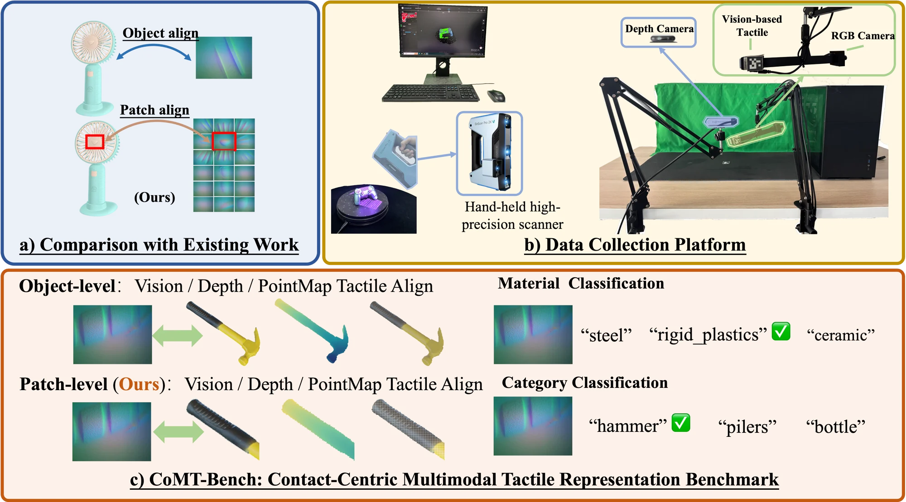
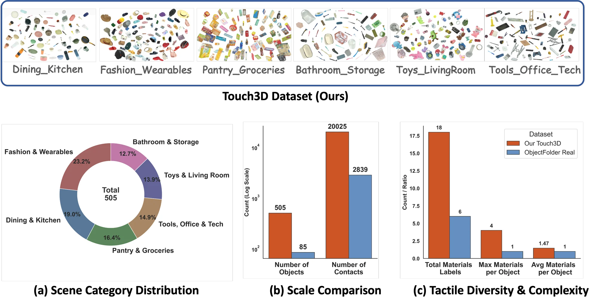
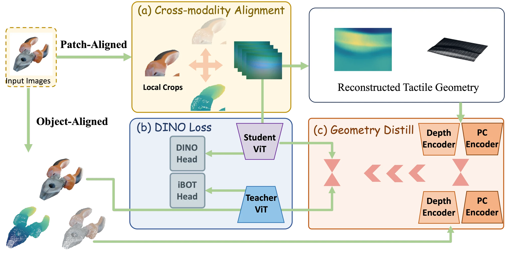
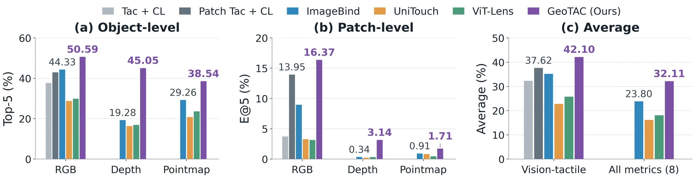
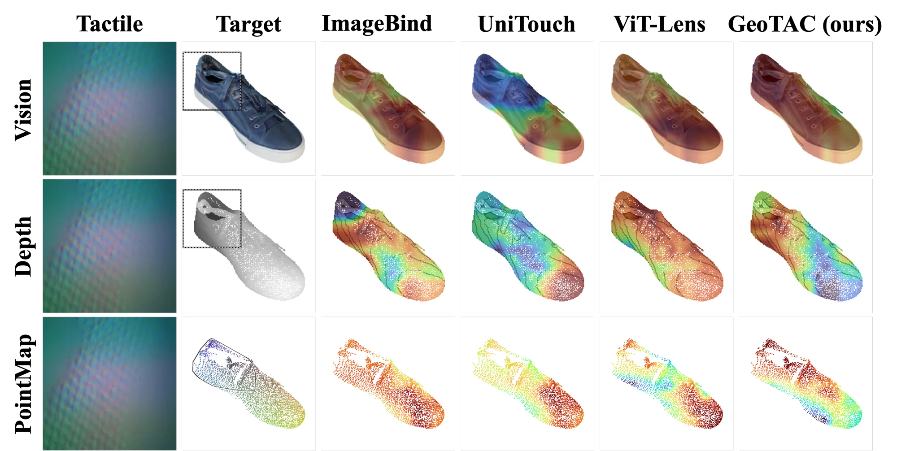

Tac-DINO
Learning Tactile Features
with Patch Alignment

The idea
From whole objects to local contact.
A tactile observation describes a small surface region, not an entire object. Tac-DINO studies what changes when tactile learning respects that physical correspondence.
We introduce Touch3D, a dataset of scanned objects and localized tactile contacts; CoMT-Bench, an evaluation spanning global retrieval, exact-contact matching, and tactile properties; and GeoTAC, a method that learns from contact-aligned RGB, depth, and pointmaps.
Patch-aligned vs. object-aligned contrastive learning on Touch3D.
Further gain with GeoTAC on the shared vision–tactile average.
Average simulation task progress over DINOv2 (Vision–Tactile).
01 / Dataset
Touch3D
One contact, connected across modalities.
A GelSight Mini records contact, while RGB observations and scanned 3D geometry provide visual and spatial context. Each tactile sample is associated with an annotated location on the object and material labels at that contact.
Collected, localized, paired.
Scanned shapes and contact-center annotations link touch to visible regions in rendered views. RGB, depth, and pointmap crops share the same contact-centered region.
Contact-visible views are retained for matching. Material labels can vary between contact locations on the same object.
View the annotation pipeline ↗
Compared with ObjectFolder Real
Touch3D expands object and contact coverage, with material annotations that can vary within one object.
| Dataset | Objects | Contacts | Materials |
|---|---|---|---|
| ObjectFolder Real evaluation subset | 85 | 2,839 | 6 |
| Touch3D | 505 | 20,025 | 18 |
ObjectFolder Real contains 100 objects in the original release. Our evaluation uses 85 objects after filtering incomplete annotations.
02 / Benchmark
CoMT-Bench
What can a tactile representation tell us?
Object-level
Retrieve global RGB, depth, or pointmap observations from a local tactile query.
Top-5 retrieval
Patch-level
Match a tactile observation to the local RGB, depth, or pointmap observation of the same contact.
Exact-contact E@5 · both directions
Tactile properties
Predict material labels and object category using the tactile representation.
Material mAP · category accuracy
03 / Method
GeoTAC
Geometry-Relation Distilled Tactile-Centric Cross-Modal Learning.
Three complementary training signals connect local touch to visual semantics and geometric relationships.

Tactile-centered alignment
Align the same contact through three pairs: RGB ↔ tactile, depth ↔ tactile, and pointmap ↔ tactile. Touch is the common reference.
DINO supervision
A global RGB teacher supervises local tactile representations. The training objective retains global DINO, iBOT, and KoLeo terms alongside local-to-global distillation.
Geometry-relation distillation
Reconstructed tactile depth and point clouds provide geometric relations that supervise RGB–tactile matching. These auxiliary tactile geometry observations are used only during training.
Geometry as supervision.
The teacher transfers similarity relationships from depth and point clouds, rather than requiring reconstructed tactile geometry as input at test time.
The animation shows the reconstructed contact depth and pointmap associated with a tactile observation.
04 / Results
Does patch alignment help?
The same contrastive objective. A more precise contact correspondence.
On Touch3D, Patch Tac + CL improves the four-metric average from 32.30 to 37.62 compared with object-aligned Tac + CL. ObjectFolder Real is evaluated without training on that dataset.
Loading paper results…
All scores are percentages. Avg. uses object-level RGB Top-5, bidirectional patch-level RGB E@5, material mAP, and category accuracy.
Learning from all four modalities
GeoTAC reaches a reported 42.10 on the shared vision–tactile average and 32.11 across all eight metrics. The two averages are shown separately to keep the comparison with vision–tactile methods explicit.

View full multimodal results
Multimodal baselines include local vision–tactile alignment. V–T averages the four metrics shared with the table above; All includes depth and pointmap retrieval. A dash indicates an unsupported modality, not zero.
What does each component add?
Both tactile-centered cross-modal alignment (CMA) and geometry-relation distillation (GD) improve over Patch Tac in the paper's ablation. GeoTAC combines the objectives.
Tactile-conditioned visualizations

05 / Robot manipulation
UniVTAC, in motion.
Synchronized visual and tactile observations across four simulation tasks.
These clips are dataset demonstrations, not trained-policy success rollouts. Quantitative policy evaluation is reported separately below.
Simulation evaluation
From representations to policies.
GeoTAC: 71.26% average task progress and 39.38% average success rate.
The paper evaluates each task over 40 rollouts per method. Success rate and task progress are different measurements; they are kept separate throughout.
SR: success rate. TP: task progress. Both are percentages; averages are over the four tasks. Values follow the paper's reported rounding.